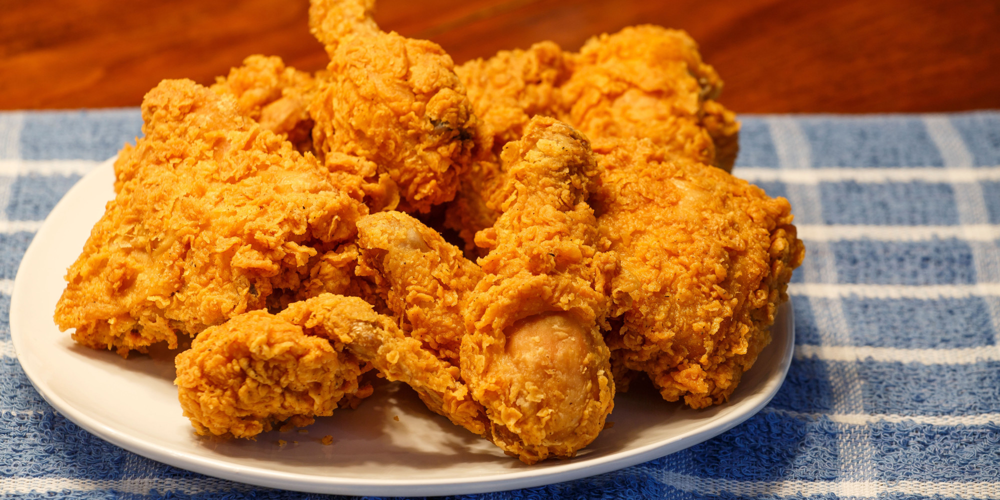

Keon Hee's Fried Chicken Recipe
Homemade Fried Chicken

Time to cook
Dozen of fried chicken
- Preparation time: 30 minutes
- Cook time: 60 minutes
- Total time: 90 minutes
12 servings
Ingredients
- 5 eggs
- 4 packets of bread crumbs
- 2 table spoons of chicken seasonings
- 2 table spoons of garlic seasonings
- 1 table spoon of parsley seasoning
- 1/4 teaspoon of pepper
- 1/4 teaspoon of salt
Directions
- Preheat oven: Preheat oven to 450 degrees of Fahrenheit (232 Celsius).
- Inside a mixing bowl: In a medium sized bowl...
- Add all amount of bread crumb packets.
- Add all amount of chicken seasonings.
- Add all amount of garlic seasonings.
- Add all amount of parsley seasonings.
- Add all amount of pepper.
- Add all amount of salt.
- Stir to mix all the ingredients together.
- Inside a separate bowl: In a small bowl...
- Crack and add all eggs inside.
- Seasoning raw chicken: Starting with the small bowl...
- Pick and insert a raw chicken inside the small bowl filled with egg yolks
- Cover the raw egg with egg yolks
- Transfer the egg-yolk-covered chicken into the seasoned mixing bowl
- Cover the chicken with seasonings
- Transfer the seasoned raw chicken to an aluminum covered baking pan
- Repeat process until no raw chickens are left
- Spray olive oil to seasoned raw chickens
- Bake: Bake the seaoned raw chicken for 60 minutes, or until fully cooked.